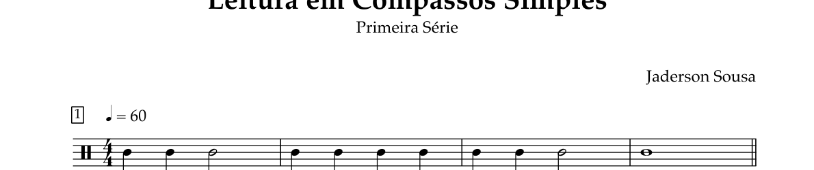

PROTÓTIPO GRATUITO · EXERCÍCIO 01 · TESTE 02
Ritmo e Contagem
4/4 · ♩ = 60 BPM · 4 compassos
1. Assista ao playback
Assista ao vídeo. Depois toque na tela seguindo a partitura.
2. Toque no ritmo

Arraste para os lados quando ampliada.
No tempoFora do tempo / omitidaSem cor: aguardando
Após quatro tempos de preparação, toque uma vez para cada início de nota. Use o metrônomo como referência. A duração das notas ainda não é avaliada.
Pronto para começar